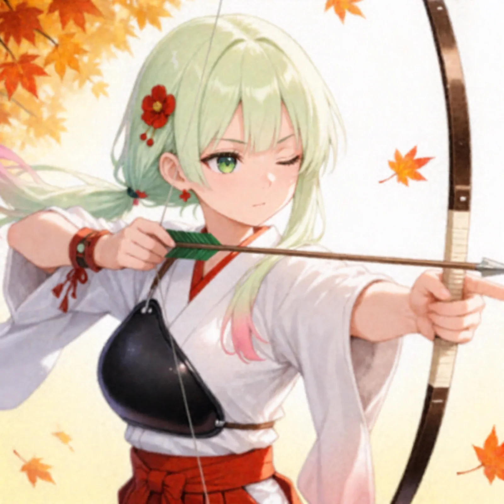
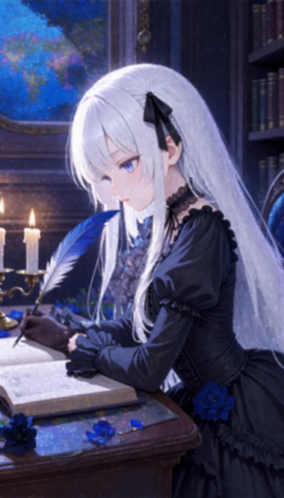
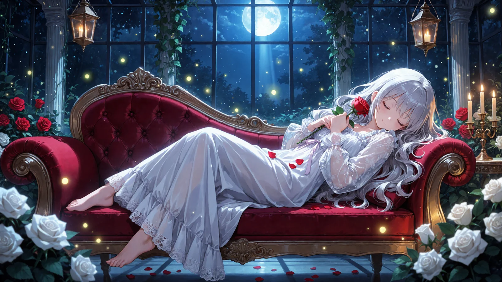
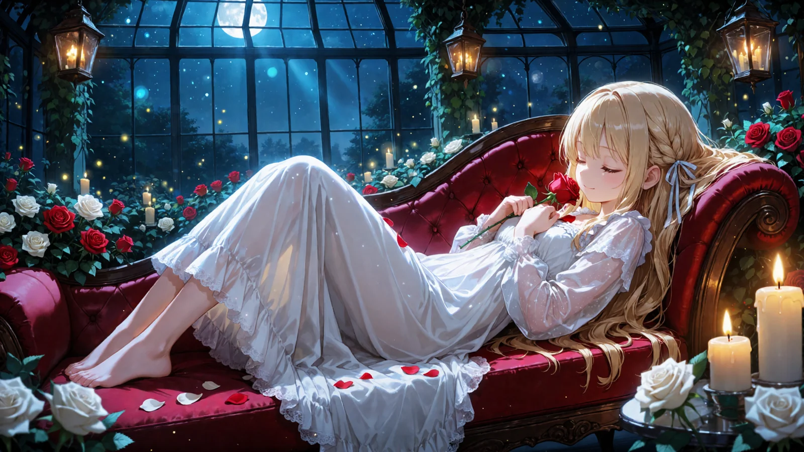
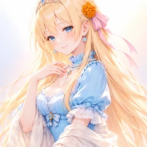
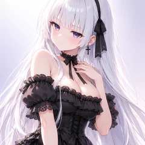

小さい・ぼやけた絵を、くっきり高精細に描き直す i2i ワークフロー
ひみつの眠り姫のプロンプト配布
ComfyUI 用2026-10-01
昔の小さい画像や、縮めてガビガビになった画像を入れるだけ。元の構図と色はそのままに、線と目と髪をくっきり描き直して2倍の大きさで仕上げます。カスタムノードも LoRA も使わない、ComfyUI の標準ノードだけのワークフローです。
作例




※作例の画像の転載・保存しての再配布はご遠慮ください。
3人のおしゃべり（くっきりになったよ）

ティルナ
見て見て！ ちっちゃくてぼやけてたわたしの絵が、こんなにくっきりになったよ！

セフィリア
まあ……髪の一本一本まで描き直されております。まるで魔法のようでございますね

リリア
カスタムノードもLoRAも使っていませんの。ComfyUIに絵を入れて、キャラの特徴を書くだけですわ
ティルナ
リリア、むずかしい言葉ばっかり〜。わたし、ボタンを押しただけだよ？
セフィリア
ティルナ、それがいちばん大事なところでございます
リリア
ふふ。昔の小さな絵も、もう一度かわいくしてあげてくださいね
使い方（3ステップ）
- 下のワークフロー（JSON）をダウンロードして、ComfyUI の画面にドラッグ＆ドロップする
- 「画像を読み込む」ノードで、描き直したい画像を選ぶ
- ポジティブの【キャラの特徴】を書き換えて「実行」を押す（1段目の denoise は 0.35 がおすすめ）
プロンプト
【色の付いたところ】を自分の内容に書き換えて使ってください。
ポジティブプロンプト
■ポジティブ（CLIPTextEncode・上） masterpiece, best quality, score_7, safe, 【キャラの特徴】, sharp focus, highly detailed, detailed eyes, beautiful detailed hair, clean lineart, vivid colors ■ネガティブ（CLIPTextEncode・下） worst quality, low quality, lowres, bad anatomy, bad hands, extra fingers, missing fingers, blurry, jpeg artifacts, text, watermark, signature, logo, japanese text, chinese text, korean text, kanji, hiragana, katakana, calligraphy ■設定1段目 denoise 0.35 → 2倍に拡大 → 2段目 denoise 0.35（KSampler 2つ・seed はどちらも同じ）
変えるところ
| ところ | 説明 | 例 |
|---|---|---|
| 【キャラの特徴】 | 絵に写っている子の特徴を英語のタグで（髪色・髪型・目の色・服・表情・場所）。書くほど元の絵に近いまま描き直されます | 1girl, light green hair, green eyes, one eye closed, hakama, archery, bow (weapon), autumn leaves |
必要なもの（ComfyUI）
🧩 カスタムノードは使っていません（ComfyUI 本体だけで動きます）。
| モデル | ファイル | 置き場 |
|---|---|---|
| Anima 系のモデル | PrismPalette_ANIMA_v1 など好きな Anima | models/diffusion_models |
| テキストエンコーダ（Anima 用） | qwen_3_06b_base.safetensors | models/text_encoders |
| VAE（Anima 用） | qwen_image_vae.safetensors | models/vae |
| SDXL 版のモデル | Illustrious・NoobAI 系のチェックポイント1本（例 waiIllustriousSDXL） | models/checkpoints |
推奨値
| denoise | 0.35（おすすめ・表情も髪飾りもそのまま） 控えめ（元の絵を強く残す） 0.45（線がさらに整う・表情や小物が少し変わる） ふつう 0.6（別の絵に近くなる） しっかり変える | |
|---|---|---|
| 2段目 | 2倍に拡大して denoise 0.35（線と細部の描き込み） | |
| Anima | steps 30・CFG 4.5・er_sde・beta | |
| SDXL | steps 28・CFG 6・euler_ancestral・normal | |
| 入力 | どんな大きさでも1メガピクセルにそろえてから描き直す（ImageScaleToTotalPixels） | |
ワークフロー（JSON）
ダウンロードして ComfyUI の画面にドラッグ＆ドロップすると読み込めます。
⬇ Anima 用（UNET＋CLIP＋VAE を別に読む）⬇ SDXL・Illustrious・NoobAI 用（チェックポイント1本）
メモ
- 顔や髪飾りが元と変わるときは、【キャラの特徴】にその部分（例：pink hair ribbon, :o）を書き足すか、1段目の denoise を 0.35 に下げてください。
- 字や看板が入った絵は、崩れた字が出ることがあります（ネガティブに文字系を入れてあります）。
- VRAM が足りないときは、拡大（ImageScaleBy）の 2.0 を 1.5 に下げてください。
- モデル名がちがうと赤いノードになります。自分のフォルダにあるモデルを選び直せば動きます。
配布ルール
- ⭕ プロンプトの改変は自由です。
- ⭕ 生成した画像は SNS に投稿して大丈夫です。
- ❌ プロンプト文そのものの転載・再配布・販売はしないでください。
- ❌ 自作のプロンプトだと名乗ることはやめてください。
- ❌ このページの作例画像の無断転載はしないでください。
- ❌ 実在の人物の写真や、他の人のキャラクターの画像を無断で添付しないでください。
- 💌 使ったら #眠り姫プロンプト を付けて見せてくれたら、とても嬉しいです（任意です）。
バックナンバー
バックナンバー（過去の配布）はここからは辿れません。欲しい方は X／Bluesky の DM で気軽に声をかけてください、URL をお送りします。